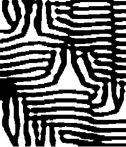
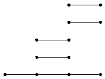
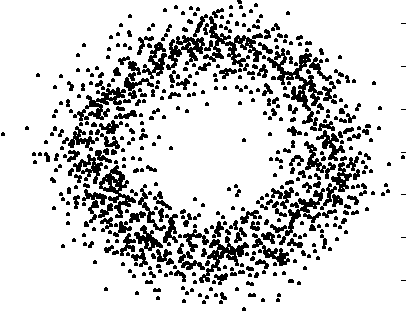
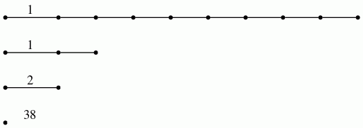
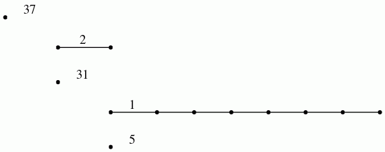

HAP uses implementations of chain complexes of free \(\mathbb K\)-modules for each of the rings \(\mathbb K = \mathbb Z\), \(\mathbb K = \mathbb Q\), \(\mathbb K = \mathbb F_p\) with \(p\) a prime number, \(\mathbb K = \mathbb ZG\), \(\mathbb K = \mathbb F_pG\) with \(G\) a group. The implemented chain complexes have the form
\( C_n \stackrel{d_n}{\longrightarrow } C_{n-1} \stackrel{d_{n-1}}{\longrightarrow } \cdots \stackrel{d_2}{\longrightarrow } C_1 \stackrel{d_1}{\longrightarrow } C_0 \stackrel{d_0}{\longrightarrow } 0\ .\)
Such a complex is said to have length \(n\) and the rank of the free \(\mathbb K\)-module \(C_k\) is referred to as the dimenion of the complex in degree \(k\).
For the case \(\mathbb K = \mathbb ZG\) (resp. \(\mathbb K = \mathbb F_pG\)) the main focus is on free chain complexes that are exact at each degree \(k\), i.e. \({\rm im}(d_{k+1})={\rm ker}(d_k)\), for \(0 < k < n\) and with \(C_0/{\rm im}(d_1) \cong \mathbb Z\) (resp. \(C_0/{\rm im}(d_1) \cong \mathbb F_p\)). We refer to such a chain complex as a resolution of length \(n\) even though \(d_n\) will typically not be injective. More correct terminology would refer to such a chain complex as the first \(n\) degrees of a free resolution.
The following sections illustrate some constructions of chain complexes. Constructions for resolutions are described in the next chapter 11.
The following example constructs the Quillen simplicial complex \(Q={\mathcal A}_p(G)\) for \(p=2\) and \(G=A_8\); this is the order complex of the poset of non-trivial elementary \(2\)-subgroups of \(G\). The chain complex \(C_\ast = C_\ast(Q)\) is then computed and seen to have the same number of free generators as \(Q\) has simplices. (To ensure indexing of subcomplexes is consistent with that of the large complex it is best to work with vertices represented as integers.)
gap> Q:=QuillenComplex(AlternatingGroup(8),2); Simplicial complex of dimension 3. gap> C:=ChainComplex(Q); Chain complex of length 3 in characteristic 0 . gap> Size(Q); 55015 gap> Size(C); 55015
Next the simplicial complex \(Q\) is converted to one whose vertices are represented by integers and a contactible subcomplex \(L < Q\) is computed. The chain complex \(D_\ast=C_\ast(Q,L)\) of the simplicial pair \((Q,L)\) is constructed and seen to have the correct size.
gap> Q:=IntegerSimplicialComplex(Q); Simplicial complex of dimension 3. gap> L:=ContractibleSubcomplex(Q); Simplicial complex of dimension 3. gap> D:=ChainComplexOfPair(Q,L); Chain complex of length 3 in characteristic 0 . gap> Size(D)=Size(Q)-Size(L); true gap> Size(D); 670 gap>
The next commands produce a smalled chain complex \(B_\ast\) chain homotopy equivalent to \(D_\ast\) and compute the homology \(H_k(Q,\mathbb Z) \cong H_k(B_\ast)\) for \(k=1,2,3\).
gap> B:=ContractedComplex(D); Chain complex of length 3 in characteristic 0 . gap> Size(B); 64 gap> Homology(B,1); [ ] gap> Homology(B,2); [ 0, 0, 0, 0, 0, 0, 0, 0, 0, 0, 0, 0, 0, 0, 0, 0, 0, 0, 0, 0, 0, 0, 0, 0, 0, 0, 0, 0, 0, 0, 0, 0, 0, 0, 0, 0, 0, 0, 0, 0, 0, 0, 0, 0, 0, 0, 0, 0, 0, 0, 0, 0, 0, 0, 0, 0, 0, 0, 0, 0, 0, 0, 0, 0 ] gap> Homology(B,3); [ ]
The following example reads in the digital image

as a \(2\)-dimensional pure cubical complex \(M\) and constructs the chain complex \(C_\ast=C_\ast(M)\).
gap> K:=ReadImageAsPureCubicalComplex(file,400); Pure cubical complex of dimension 2. gap> C:=ChainComplex(K); Chain complex of length 2 in characteristic 0 . gap> Size(C); 173243
Next an acyclic pure cubical subcomplex \(L < M\) is computed and the chain complex \(D_\ast=C_\ast(M,L)\) of the pair is constructed.
gap> L:=AcyclicSubcomplexOfPureCubicalComplex(K); Pure cubical complex of dimension 2. gap> D:=ChainComplexOfPair(K,L); Chain complex of length 2 in characteristic 0 . gap> Size(D); 618
Finally the chain complex \(D_\ast\) is simplified to a homotopy equivalent chain complex \(B_\ast\) and the homology \(H_1(M,\mathbb Z) \cong H_1(B_\ast)\) is computed.
gap> B:=ContractedComplex(D); Chain complex of length 2 in characteristic 0 . gap> Size(B); 20 gap> Homology(B,1); [ 0, 0, 0, 0, 0, 0, 0, 0, 0, 0, 0, 0, 0, 0, 0, 0, 0, 0, 0, 0 ]
The next example constructs a \(15\)-dimensional regular CW-complex \(Y\) that is homotopy equivalent to the \(2\)-dimensional torus.
gap> Circle:=PureCubicalComplex([[1,1,1,1,1],[1,1,0,1,1],[1,1,1,1,1]]); Pure cubical complex of dimension 2. gap> Torus:=DirectProductOfPureCubicalComplexes(Circle,Circle); Pure cubical complex of dimension 4. gap> CTorus:=CechComplexOfPureCubicalComplex(Torus); Simplicial complex of dimension 15. gap> Y:=RegularCWComplex(CTorus); Regular CW-complex of dimension 15
Next the cellular chain complex \(C_\ast=C_\ast(Y)\) is constructed. Also, a minimally generated chain complex \(D_\ast=C_\ast(Y')\) of a non-regular CW-complex \(Y'\simeq Y\) is constructed.
gap> C:=ChainComplexOfRegularCWComplex(Y); Chain complex of length 15 in characteristic 0 . gap> Size(C); 1172776 gap> D:=ChainComplex(Y); Chain complex of length 15 in characteristic 0 . gap> Size(D); 4
The next example realizes the complement of the first prime knot on \(11\) crossings as a pure permutahedral complex. The complement is converted to a regular CW-complex \(Y\) and the boundary inclusion \(f\colon \partial Y \hookrightarrow Y\) is constructed as a map of regular CW-complexes. Then the induced chain map \(F\colon C_\ast(\partial Y) \hookrightarrow C_\ast(Y)\) is constructed. Finally the homology homomorphism \(H_1(F)\colon H_1(C_\ast(\partial Y)) \rightarrow H_1(C_\ast(Y))\) is computed.
gap> K:=PurePermutahedralKnot(11,1);; gap> M:=PureComplexComplement(K); Pure permutahedral complex of dimension 3. gap> Y:=RegularCWComplex(M); Regular CW-complex of dimension 3 gap> f:=BoundaryMap(Y); Map of regular CW-complexes gap> F:=ChainMap(f); Chain Map between complexes of length 2 . gap> H:=Homology(F,1); [ g1, g2 ] -> [ g1^-1, g1^-1 ] gap> Kernel(H); Pcp-group with orders [ 0 ]
The command ChainMap(f) can be used to construct the chain map \(C_\ast(K) \rightarrow C_\ast(K')\) induced by a map \(f\colon K\rightarrow K'\) of simplicial complexes.
It is straightforward to implement basic constructions on chain complexes. A few constructions are illustrated in the following example.
gap> res:=ResolutionFiniteGroup(SymmetricGroup(5),5);; gap> C:=TensorWithIntegers(res); Chain complex of length 5 in characteristic 0 . gap> D:=ContractedComplex(C);#A chain homotopic complex Chain complex of length 5 in characteristic 0 . gap> List([0..5],C!.dimension); [ 1, 4, 10, 20, 35, 56 ] gap> List([0..5],D!.dimension); [ 1, 1, 2, 4, 6, 38 ] gap> CxC:=TensorProduct(C,C); Chain complex of length 10 in characteristic 0 . gap> SC:=SuspendedChainComplex(C); Chain complex of length 6 in characteristic 0 . gap> RC:=ReducedSuspendedChainComplex(C); Chain complex of length 6 in characteristic 0 . gap> PC:=PathObjectForChainComplex(C); Chain complex of length 5 in characteristic 0 . gap> dualC:=HomToIntegers(C); Cochain complex of length 5 in characteristic 0 . gap> Cxp:=TensorWithIntegersModP(C,5); Chain complex of length 5 in characteristic 5 . gap> CxQ:=TensorWithRationals(C); #The quirky -1/2 denotes rationals Chain complex of length 5 in characteristic -1/2 .
A sequence of inclusions of chain complexes \(C_{0,\ast} \le C_{1,\ast} \le \cdots \le C_{T-1,\ast} \le C_{T,\ast}\) in which the preferred basis of \(C_{k-1,\ell}\) is the beginning of the preferred basis of \(C_{k,\ell}\) is referred to as a filtered chain complex. Filtered chain complexes give rise to spectral sequences such as the equivariant spectral sequence of a \(G-CW\)-complex with subgroup \(H < G\). A particular case is the Lyndon-Hochschild-Serre spectral sequence for the homology of a group extension \(N \rightarrowtail G \twoheadrightarrow Q\) with \(E^2_{p,q}=H_p(Q,H_q(N, \mathbb Z))\).
The following commands construct the filtered chain complex underlying the Lyndon-Hochschild-Serre spectral sequence for the dihedral group \(G=D_{32}\) of order 64 and its centre \(N=Z(G)\).
gap> G:=DihedralGroup(64);; gap> N:=Center(G);; gap> R:=ResolutionNormalSeries([G,N],3);; gap> C:=FilteredTensorWithIntegersModP(R,2); Chain complex of length 3 in characteristic 2 .
The differentials \(d^r_{p,q}\) in a given page \(E^r\) of the spectral sequence arise from the induced homology homomorphisms \(\iota^{s,t}_\ell\colon H_{\ell}(C_{s,\ast}) \rightarrow H_{\ell}(C_{t,\ast})\) for \(s\le t\). Textbooks traditionally picture the differential in \(E^r\) as an array of sloping arrows with non-zero groups \(E^r_{p,q}\neq 0\) represented by dots. An alternative representation of this information is as a barcode (of the sort used in Topological Data Analysis). The homomorphisms \(\iota^{\ast,\ast}_2\) in the example, with coefficients converted to mod \(2\), are pictured by the bar code

which was produced by the following commands.
gap> p:=2;;k:=2;; gap> P:=PersistentHomologyOfFilteredChainComplex(C,k,p);; gap> BarCodeDisplay(P);
Boundary homomorphisms in all of the above examples of chain complexes are represented by matrices. In cases where the matrices are large and have many zero entries it is better to use sparse matrices.
The following commands demonstrate the conversion of the matrix
\(A=\left(\begin{array}{ccc} 0 &2 &0\\ -3 &0 & 0\\ 0 & 0 &4 \end{array}\right)\)
to sparse form, and vice-versa.
gap> A:=[[0,2,0],[-3,0,0],[0,0,4]];; gap> S:=SparseMat(A); Sparse matrix with 3 rows and 3 columns in characteristic 0 gap> NamesOfComponents(S); [ "mat", "characteristic", "rows", "cols" ] gap> S!.mat; [ [ [ 2, 2 ] ], [ [ 1, -3 ] ], [ [ 3, 4 ] ] ] gap> B:=SparseMattoMat(S); [ [ 0, 2, 0 ], [ -3, 0, 0 ], [ 0, 0, 4 ] ]
To illustrate the use of sparse chain complexes we consider the data points represented in the following digital image.

The following commands read in this image as a \(2\)-dimensional pure cubical complex and store the Euclidean coordinates of the black pixels in a list. Then 200 points are selected at random from this list and used to construct a \(200\times 200\) symmetric matrix \(S\) whose entries are the Euclidean distance between the sample data points.
gap> file:=HapFile("data500.png");; gap> M:=ReadImageAsPureCubicalComplex(file,400);; gap> A:=M!.binaryArray;; gap> data:=[];; gap> for i in [1..Length(A)] do > for j in [1..Length(A[1])] do > if A[i][j]=1 then Add(data,[i,j]); fi; > od; > od; gap> sample:=List([1..200],i->Random(data));; gap> S:=VectorsToSymmetricMatrix(sample,EuclideanApproximatedMetric);;
The symmetric distance matrix \(S\) is next converted to a filtered chain complex arising from a filtered simplicial complex (using the standard persistent homology pipeline).
gap> G:=SymmetricMatrixToFilteredGraph(S,10,100);; #Filtration length T=10, distances greater than 100 discarded. gap> N:=SimplicialNerveOfFilteredGraph(G,2);; gap> C:=SparseFilteredChainComplexOfFilteredSimplicialComplex(N);; Filtered sparse chain complex of length 2 in characteristic 0 .
Next, the induced homology homomorphisms in degrees 1 and 2, with rational coefficients, are computed and displayed a barcodes.
gap> P0:=PersistentHomologyOfFilteredSparseChainComplex(C,0);; gap> P1:=PersistentHomologyOfFilteredSparseChainComplex(C,1);; gap> BarCodeCompactDisplay(P0);

gap> BarCodeCompactDisplay(P1);

The barcodes are consistent with the data points having been sampled from a space with the homotopy type of an annulus.
generated by GAPDoc2HTML